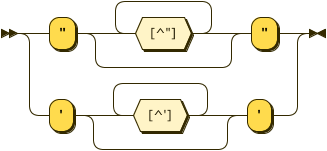

Mia' Internship Blog
Reports and weekly updates on her Larson Texts adventure
Mia Borgia began working as a Software Development Intern for Larson Texts, Inc. on September 28th, 2021. Mia is generally posted at her position in Intern Alley from roughly noon to 5:00pm on Tuesdays and Thursdays. Here, the continuum of her adventure is updated weekly.
Week of 9/28-9/30 - First Week
It was a sunny Tuesday afternoon that I entered the office building. With a bundle of paperclips cinching the too-loose waistline of my slacks, which I haphazardly purchased the week before, I remarked on the monumentousness of the day. My supervisor, Dan, gave me a tour of the building, introducing me to my new coworkers at their posts as we made our rounds about the office quarters. He gave me a plate of pumpkin cookies to entice my fellow Larsonians to come introduce themselves at my desk throughout the day. I attended my first Arjuna team meeting in the outdoor courtyard area, where my software development team introduced themselves and exchanged little stories of their lives leading up to Larson. I was acquainted with the equipment available to me at my new work desk, including my work PC, my work email, etc. Alan, the wizard of programming code, had another private meeting with Dan and I later in the day to acquaint me with the details, scope, and logistics of the company quest at hand: Arjuna. As I currently understand it, our software development team is tasked with creating Arjuna to provide a platform on which teachers and students throughout the country may access Larson textbook resources, lessons, and materials through a user interface designed to tailor specifically to the state the users are in, the corresponding state standard competencies that are required for teachers to give to students, and keep a record of how the students are progressing with the material. This involves creating multiple layers of structured API which integrate State Core Competencies, Larson's Learning Resources, and the relationships between them. In short: it's a friggen huge adventure, and now I'm in it.
-Mia
Week of 10/5-10/7 - Second Week
Now marks the end of my second week, and I'm already beginning to feel more confident about my general existence at this fine institution. My feelings of repressive shyness and uncertainty have almost entirely subsided, and I'm firmly grasping the project's overall structure, goals, and the things I can contribute to the software code. Alan introduced me to the world of Object-Oriented Programming (OOP), and sent me on my way exploring the software devs' database of choice for this project: Arango DB. I've begun using Arango's tools to create a JSON schema for the competencies dataset, which is turning out to be an adventure in its own right - involving copious amounts of Googling. Alan said once this first schema is written and in proper order, writing the other schemas for the rest of the datasets will be a piece of cake. Except the cake will be avocado flavored with javascript object notation icing on top.
-Mia
Week of 10/12-10/14 - Third Week
Week three was the week of data validation reckoning, it seems. On Tuesday, I Googled and JSON-schema-ed my little heart out to create some well-formed code which validated the rules for each object within the competencies dataset of Arjuna... for the most part. The schema did the job in that it prevented incorrect data inputs for each object property, for example, if an object "Token" has a key-value pair where {"type": "string"}, any data inputs entered into that object that are not a string (a number, a boolean, null, etc.) would be rejected. This was all well and good for object data, but we ran into some trouble with data that contained an array. For example:
A "Definition" object contained an array of two property types, "language" and "text". The "language" property is set to only be allowed to contain a "string", but in the competencies data, the language inputs conform to the ISO language keywords - such as "en-US" for American English or "es-US" for American Spanish. Setting the data type property as "string" is not specific enough to prevent any strings other than the ISO language codes Arjuna uses from occurring within the "language" property. Since JSON Schema is such a new language, there hasn't been documentation or rules created to make string datatypes be more specific.
As I continued battle-testing my schema, I realized a major issue with JSON schema's limited data validation powers: since JSON Schema's syntax does not include code that can define how many times an array can repeat itself within an object array, preventing extra properties from being allowed to occur beyond the given items in the object arrays is impossible. It successfully prevents improper property types from being validated, but when I add in a new random key-value pair that I did not define within that object, it validates anyways. For example, the "Tags" object array:
The object array "Tags" can have multiple sets of the three items "language", "text", "public". JSON schema does not provide the option of defining exactly how many times this repetition of items is allowed to occur, and when I input random incorrect key-value items, it validated the code when it should not have. Alan and I had a discussion about this, and by the end of it, Alan and I agreed that JSON schema was simply not the way to go in terms of data validation. For now, since there are already multiple layers of data validation in place when the data is created, Alan feels comfortable going without another layer of validation for now - especially since this project is crunched for time.
While we alas are bagging the JSON schema route, I learned a whole lot about JSON and OOP in general in the process of creating this schema, so I'm happy that my work has lead to new discoveries - however unfruitful. I am going to document my JSON schema discoveries, and continue working on the data in new ways that will hopefully be more helpful to the project in the coming weeks. Sorry JSON schema, but you are not Relax-NG, and therefore you stink.
-Mia
Week of 10/19-10/21 - Fourth Week
I am no longer the newest person on the Tech/Software Dev team! We have a new Junior Software Developer and a new Scrum Master. Dan got us Panera Bread for lunch to welcome them, and it was scrumptious. I had a turkey blatvocado sandwich. Scrumptious. This week I've been mostly trying to figure out ways around the limitations presented by JSON schema. If it turns out I can't find any way to write a JSON schema that will meet our data validation needs, I'm going to try writing a Javascript schema instead. I was only able to attend one of the workshops from the week-long Arango Dev Days conference, since most of the talks and panels directly conflicted with my insane schedule. The one workshop I went to was pretty nifty, though. They were talking about AQL and different ways of using Arango to query data. The folks who work for Arango are pretty dang smaht.
The rest of this week's activities included writing up documentation on the process of battle-testing my schemas, how to associate a schema with a collection in Arango, and some other jazz. I'm starting to get the hang of the whole "ticket" and "sprint" workflow situation the Tech team uses. A ticket is a thing you are going to complete by the end of a sprint. A sprint is about two weeks of work. (No, there are no "jogs", as far as I know.) A ticket has multiple sub-tasks that comprise the sprint. When you're done with all of your tickets' sub-tasks, you won the sprint. Then you run around the building real fast yelling "I AM SPEED". That's called a victory lap. I think. Then, before the next sprint, we do a "grooming" meeting, where we go through everybody's tickets for the next sprint, and then everybody votes on the complexity of the ticket and how long they think the ticket is going to take that person or group working on the ticket, using a weird rating scale of 3-13, 3 being super simple and shouldn't take long, 13 being super complex and it'll take a while. Except you can only choose from 3, 5, 8, 13, and 89. If you vote 89, your vote doesn't count because that's a ridiculous number and shame on you for even thinking of pressing that big beautiful number.
-She Who Voted 89
Week of 10/26-10/28 - Fifth Week
Life got weird this week, but work was superb. I finally got to make a branch and push to one of the Arjuna project repositories! Yayyyy. I still can't help sort of feeling like dead weight for my team, because of how little software dev code I know (JS, TS, C++. shiz like that), but I think that might change soon. Alan the Wizard of Code and Things had the fantastic idea of having me do a little side-project homework exploration on Javascript. He suggested that I create a little music album JSON data library to run JS code through. So here's the new plan: Every Wednesday at 3:30ish, I go in to Larson after class to meet with him and he teaches me about different ways to use JS functions that are relevant to the Arjuna project, but instead of writing it for the Arjuna project, which is huge and complex and not the easiest for rookies to grasp, he'll show me how to write the code and run it on my little JSON library. I'll be using Postman to create get() and post() requests as a client to my music album server. This will give me lotsa practice on backend-developing freeform JS jazz.
Tim sent me a document with some code he wrote for formal grammar rules in the project, using a language he dubbed "Caveman XML" called EBNF - Extended Backus–Naur Form. According to Wikipedia, EBNF is a family of metasyntax notations, any of which can be used to express a context-free grammar. EBNF is used to make a formal description of a formal language such as a computer programming language. Tim wrote some EBNF to establish grammar rules for the learning objects and other things that we will be the building blocks for Arjuna's data. The syntax sort of reminds me of JSON, Relax-NG, REGEX, and XML combined. I think Tim and I are going to set up a meeting next week to talk about the code he wrote, and ways we might be able to implement it into the backend code to establish contexts for our data processsing, validations, and modeling.
We also had a little company lunch at Calamari's this week, which was really fun. (: I got to talk to some coworkers that I hadn't really gotten the chance to talk to before. My social anxiety and general feelings of intimidation are slowly easing day by day. Everybody is just a person, doing their best, learning as they go, same as me.
-Human
Week of 11/2-11/4 - Sixth Week
Lots of discoveries and breakthroughs in development code/data generation this week! But first, a big update on the trials and tribulations of JSON schema coding for data validation: I finally found out why Arango was allowing extraneous objects to occur within the data, outside of those I had listed as properties in the JSON schema. Upon testing the schema I wrote for the scopes collection, I realized something strange. Every time I pasted and saved the entirety of my schema code into the collection's Schema code entry block, each time I navigated away from the page and went back to look at the schema code in Arango, the last portion of my schema code was completely gone - including the last property definition, as well as my required:["...", "...", "..."] and additionalProperties: false parameters at the end of the schema rule. Those parameters, which Arango was automatically deleting, should've prevented any properties outside of those listed in the rule. I was baffled at why Arango was deleting parts of my code - normally, whenever there is a syntax error in the code, Arango simply will not allow you to save the schema, and will throw an error. Neither Arango nor VS Code flagged any portion of my schema as malformed. I then investigated my code to try to understand why Arango would delete whole portions of my code, and made a facepalm-deserving discovery: due to the misplacement of one little curly brace, my schema rule was improperly nested. I had an extra curly brace at the end of my second-to-last schema property rule, which closed the "rule": property which contained all of the rules for the entire schema, instead of just the current property rule node I meant to close. This must be why Arango automatically deleted the following property rules and parameters; it assumed I had finished the code once it hit that extra end-curly brace, disregarding the rest of the nested items. Whoops... **facepalm intensifies**
Once I promptly corrected that silly curly brace mistake in my schema code, I updated the Arango collections for both the competencies and scopes data sets and ran some tests - and it worked! Yay! Sadly, extraneous data inputs are still being validated within object arrays, but the schema now successfully prevents random properties from being validated. I told Alan about it, explaining my little curly brace error, and he was very happy with my discovery. He reassured me that silly little mistakes like that happen to experienced devs all the time, which helped prevent me from facepalming myself into oblivion. Now that I understand better how important the nesting of property items within a JSON schema rule is, I think I might be able to rewrite my schemas to fix the problem of extraneous data inputs within the object arrays... more on that next week.
I now have a new priority: generating iterations of competency data using Tim's EBNF formal grammar rules code, possibly with some natural language processing! I had a meeting with Alan and Tim on Thursday to discuss the grammar rules for the competencies, and we tweaked it a bit to ensure that it would produce succinct and logical sentences when each piece of the grammar web is parsed and strung together with actual competency words and phrases from the Common Core vocabulary, as well as from Larson's textbook lingo. This all came to be when I asked the golden question: "How are these rules going to be implemented into the code?" In short, Alan and Tim have tasked me with re-writing Tim's EBNF in a language I'll be able to run through a natural language processor, and generate real-live competency data to be used in Arjuna's real competency code. This is a pretty big deal for the project overall, so I feel honored that Tim and Alan trust me with this quest! I'm thinking I'll rewrite the EBNF syntax rules in relax-NG, and possibly transform it into something that can be processed through Python to generate iterations of code? I'm definitely looking forward to Dr. B's counsel on this, since she's the natural-language-processing guru.
On the Wednesday software dev training front, we finally got the post() function working in Postman on my JS album server! Now I can hit the ground running and write more JS to allow post requests to save into the body of my JSON album data library, as well as allow for new types of album data (such as release dates, recording studio names, etc.) to be input by the client. Alan walked me through the JS functions which test the validity of the post() input data. Here's a peek:
function validateAlbumInput(inputData) {
if(!inputData.name) return false; // does the "name" attribute exist?
if(typeof(inputData.name) != "string") return false; // is it a string?
if(!inputData.name.length) return false; // is it not empty?
if(!inputData.artist) return false; // does the "artist" attribute exist?
if(typeof(inputData.artist) != "string") return false; // is it a string?
if(!inputData.artist.length) return false; // is it not empty?
return true
}
Lots of learning happening real fast. I feel my brain expanding at sonic speeds.
-O' Learnd-ed One
Week of 11/9-11/11 - Seventh Week
School and life this week hit me with a metaphysical bag of bricks, but by some miracle, work was still productive... dare I say fun. I pushed those corrections to the data validation schemas for the scopes and competencies data up to the Arjuna BitBucket repository, where I learned something schwifty about git branches and using git log and git diff commands. Since I was working on two separate unmerged branches for the competencies validation code and the scopes validation code, I didn't realize I needed to be sure that I switched which branch I was on in the terminal using git checkout [branch-name] to see the updates I made to the other schema. So, as I was working on the scopes schema, when I went to check my competencies schema to compare, I saw that the competencies schema had mysteriously reverted to an older version of itself! (It didn't - I was simply on the scopes branch, which didn't have the updates I made on the competencies schema and main branches on it.) Seeing this, I re-updated my competencies schema code on the scopes branch, and you can probably guess what happened when I tried to merge it to main. *dun dun dunnn* BUT good news was, I didn't totally make everything explode. Bitbucket prevents you from merging a branch if there's a merge conflict afoot, phew. Alan showed me how to use git diff to grab all of the commit IDs from all of the commits which had my scopes schema work on it, but none of the silly misunderstood competencies schema edits - so all I had to do was grab those commits and push them to the main branch, and nuke the problematic conflict branch, and boom. Problem solved. But that's definitely the last time I ever push anything directly into the main branch without a proper branch pull request!
Now that the data validation stuff is out of the way, I'm shifting my focus solely onto creating a syntax diagram using Tim's Formal Competency Grammar EBNF, in the hopes of producing a helpful visualization for our competency data syntax tree! I'm going to try tweaking Tim's EBNF to run it through this Railroad Diagram Generator I found, which takes any input EBNF and turns it into a cool HTML/SVG syntax diagram. Here's a little piece of what the output looks like, using the example EBNF syntax tree the site provides:
Due to the gargantuan amounts of school work that was foisted upon me this week, I had to cancel our software dev code training on Wednesday...</3 big sad. I felt really bad about cancelling, but I hadn't made as much progress on the Javascript HTTP request code for music album data as I would've liked in preparation for the training. Alan and Dan were both very understanding, because, ya know, college is muy importante. Priority numero uno, for the next few months... It still hasn't totally sunk in that I'm graduating hecking college. Wows. Who'da thunk it. Certainly not me, 5 years ago. 17-year-old me would've also never imagined that I'd have a real human adult job, on software development, no less - not to mention all the other amazing opportunities that have been bestowed upon me within the past year and a half. I genuinely thought I was going to be living in a van down by the river.
p.s. the van down by the river living situation still isn't out of the question.
- Not in a van, but sometimes down by the river
Week of 11/16-11/18 - Eighth Week
One week, two words: Planning & Meetings. The Arjuna team converged in a two-day Planning Summit spree, consisting of a pair of 4-hour long meetings on Wednesday and Thursday this week. I won't get into the nitty-gritty details of all of the topics that were discussed during the meetings, since I'm quite sure a hefty portion of it is top-secret-classified-company-special-sauce.
On Tuesday I had some time to crank out the Competency Formal Grammar syntax diagram from the Railroad Diagram generator site. Tim came along at the end of the day to take a look at it with me, and the visualization made him realize a couple of things needed to be re-written in the EBNF to more accurately capture what a modified competency needs to contain, so that the syntax more closely represents what learning objects and aspects of the LO data a competency will entail. Here's a peek at some of the SVG syntax trees I generated:
modified_competency ::=
formal_process ::=

learning_object ::=

Now that my syntax diagram helped us nail down more exactly the definition of a competency, I'm on a full-court press to generate the competency data iterations using these rules. I'm a little nervous about it since this will be an integral part of the Arjuna software dataset, but I think I can do it. I have a minor in Googling.
Due to the unyielding Arjuna Planning Summit meeting on Wednesday, Alan, Dan, and I decided to postpone our software development training meeting, since getting a bunch of passionate coders and project managers together in a room for 4 hours runs the inevitable risk of strong opinions flowing over the scheduled meeting end-time. Although, I will say I think I've finally made some decent (albiet bug-ridden) progress on my JSON music album HTTP server script. I was able to write in the beginnings of a function which checks to make sure that the client's post() request of an album doesn't have an album name that matches the name of an album already present within the JSON library, to prevent any duplicate albums from being uploaded. Here's a peek at that function:
function doesAlbumExist(inputData, album){
let albums = loadAlbumData()
// Does the input data have an album name that is equal to the album name of an existing JSON object?
if(inputData.name = albums.name) return false;
// If not, return true
return true
}
I also wrote some more functions into the post() method, which I have not been able to get working yet. My goal is to allow the validation functions to check the client's post() content body against my given restrictions, and if the data is valid, have it be saved and added to the existing JSON album library file. I've been watching and reading many tutorials on this, so hopefully I will have it working by next Wednesday. I feel like I'm close!
app.post("/albums", (req, res) => {
let newAlbumData = req.body
let albums = loadAlbumData();
if(!albums){ res.send("could not load album data"); } \\ return an error if the existing album file cannot be found
let isvalid = validateAlbumInput(newAlbumData);
if(!isvalid){
res.status(400)
res.send("o no") \\ if the client's post() request body is invalidated by the validateAlbumInput function, return an error. If not, pass it through...
} else {
\\ This is the new code I wrote in attempts to use the .fs Node.js module to read the existing albums file and write the client's request body into the file.
var data = fs.readFileSync('/albums')
var newAlbum = JSON.parse(newAlbumData)
var data = JSON.stringify(newAlbum); \\ In case you're wondering what the heck all this JSON.parse and JSON.stringify jazz is all about, I watched a tutorial that told me that you must tell the function HOW to read the incoming data in order to save it properly - otherwise, the computer just thinks everything is flat, meaningless, unrelated strings of text. We need to first parse the JSON out of the new album data and then stringify it in order to write it into our existing JSON library. (or so the Youtube Coder Dude says.)
fs.writeFile(albums, data, finished);
function finished(err) {
console.log('thanks for your album!');
}
}
res.json(albums)
})
Right now, my HTTP post() requests in Postman are returning o no, which means there's something up with my validateAlbumInput() function. I'll have plenty of time this weekend to investigate more into this!
-Mia
Week of 11/23-11/24 - Ninth Week
'Twas a week chock-full of new things, experimentation, and triumph. I worked two full 8-hour days on Tuesday and Wednesday since I had no classes this week for gobble gobble day, and I feel like I got a LOT more accomplished than I normally would have during my usual 5 hour days. I mostly worked on finding ways to generate competency data from our EBNF grammar syntax rules, and I ended up finding this BNF generator which takes input BNF grammars and generates random sentences based on the rules defined in the BNF grammar. I had to rework our original EBNF to turn it into functinal BNF for the client-side demo input, and once I got it working, it produced a lot of good instances of competency senteces!! I showed this to Tim and Alan, and we made some further adjustments to our original grammar rules to adjust it to what we need for Arjuna's competency data set. We found that in order to generate competencies that are more granular and filtered by domain scopes, we can avoid some illogical productions that would never actually occur in a real competency for the LMS. After I rewrite the umbrella modified_competency into separate competency definitions for each scope, all I need to do is find a way to implement this into code and generate the outputs. I tried to install the bnfgen as an npm module so that I could use their generator locally, but alas, I don't think the developers of that package worked out some major kinks in their bnfgen github repo - nothing worked, and everything threw bug errors. Not even their demo input worked when I ran it, so that was a big red flag. I'm better off just converting all of the end-terminal strings into XML, and then use XQuery to somehow apply our grammar rules to the end terminals and generate some fine-tuned competency string iterations.
On the Javascript exploration side of things - we had our Wednesday software development training, and Alan helped me debug my album JSON library server post() request and my doesAlbumExist() function to check that the client isn't pushing duplicate albums into our library. And the post() method finally works! Now, using Postman to simulate client side server interactions, I can write new album data into the library! Woooo. Next, we are going to reconfigure the structure of this album server to emulate Arjuna's project structure by creating a Foxx layer to integrate document and edge collections of album data and album relationship data, which will help me conceptualize what the backend of Arjuna is like.
And finally - if you haven't already noticed - my adventures into Javascript at Larson have led me into a JS-3D-exploration-extravaganza. I found something called Three.JS, which is an npm package module which allows you to create 3D environments using just plain-old javascript!! Pretty nifty eh? I'm definitely going to use this to implement my 3D Mayan relic objects from Blender into our DIGIT 400 project side.
- Hardened Three.JS veteran
Week of 11/30-12/2 - Tenth Week
As I eclipse my 10-week anniversary of my Larson Texts escapade, the bloody Void of Finals, Sleep Deprivation, and Despair swallows me whole. This week, I explored some different options for generating comeptency sentence data iterations based on Tim's EBNF grammar rules, and I came up with two plausible options: one, to use a python module called generate.ds, which takes an input XML Schema file and converts the rules specified in that schema to generate python classes, which could then be used to run queries on my XML competency component string data collection and generate iterations based on the grammar-defined python classes. I also considered using either XSLT or XQuery, but these two options both seemed like they may be limited in their capabilities to allow for flexible and effective control over the filtering of component strings by scope domains which require or exclude them. But, I felt optimistic about XSLT due to the great transformation powers it holds, so I wanted to give it a try. Before writing any scripts, I used Tim's Google spreadsheet containing all of the strings for each of the sentence components and coded them in a nested XML hierarchy, nested based on their relative relationships to neighboring sentence components, and whether or not a choice was involved. Here's a peek at the hierarchy, based on our grammar syntax flow:
I wanted to try using generate.ds first, because according to the documentation, generating instances of data using this module is highly controllable, which is very important for these competency generations since they need to be able to be filtered and streamlined according to scope attributes. Plus, it seemed more robust than what my current understandings are of the processing powers of XSLT and XQuery for this sort of iteration work. Here's a look at the XML schema I wrote, again based on the syntax rules defined by Tim's EBNF:
I was surprised at how intuitive it was to write XML schema. It helped me conceptualize the structure of each of these competency sentences in a new way. Implementing the scopes attributes will be the fun part!
- Competency Generator Extraordinaire
Week of 12/7-12/9 - Eleventh Week
This concludes the Larson Texts chronicles... for now.
Thanks for reading!
Check out my Digital Portfolio, if you dare.
... while you're at it, peep my LinkedIn.